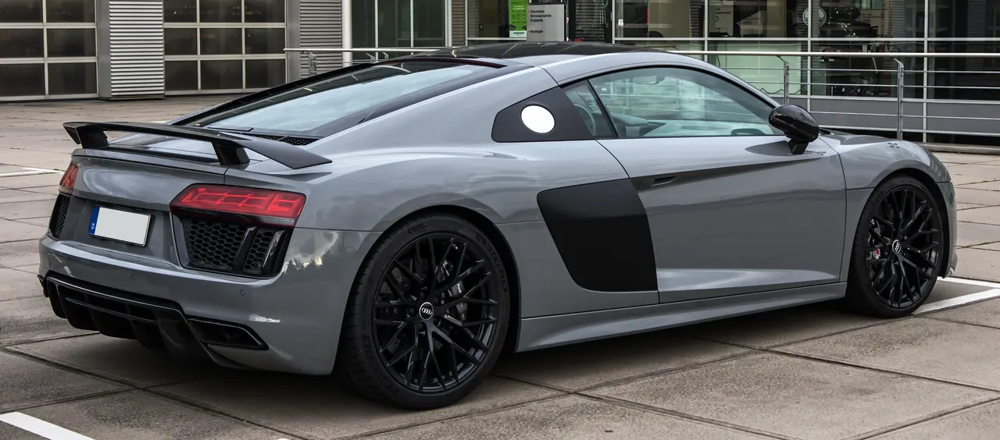
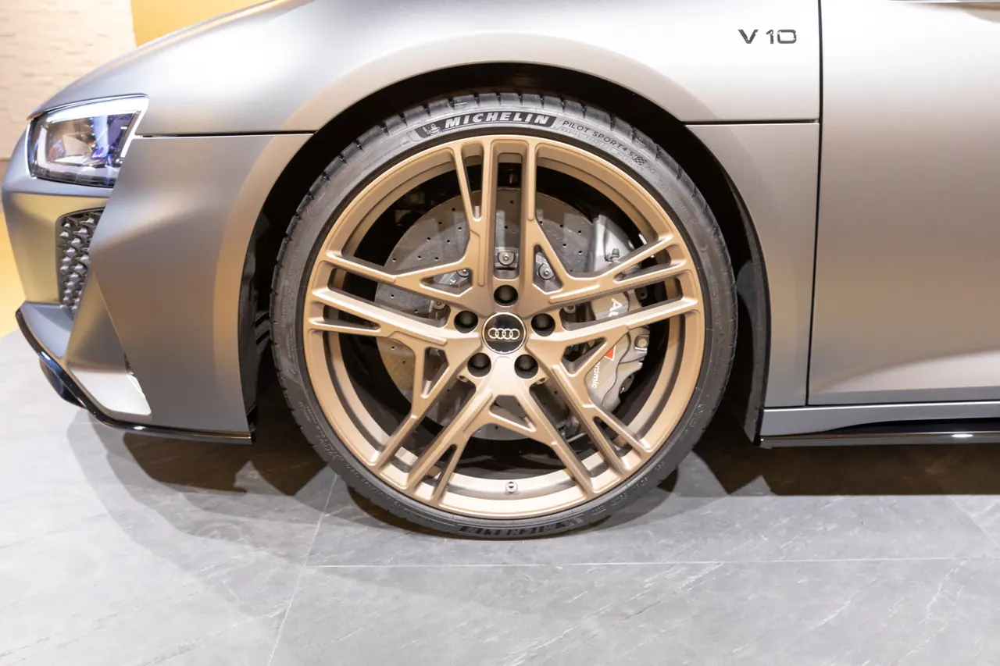

▲ R8이 단종된 뒤 비어 있던 아우디 슈퍼카 자리를 누볼라리가 메운다 ⓒ Wikimedia Commons
아우디 R8이 단종된 뒤, 그 자리는 비어 있었습니다. 후속에 대한 이야기는 많았지만 확정된 것은 없었습니다.
이번에 나온 답은 누볼라리입니다. 아우디 양산차 사상 최강이고, 만드는 수는 499대뿐입니다.
1. 1만 rpm까지 도는 V8
가장 이례적인 수치가 회전한계입니다. 4.0리터 트윈터보 V8이 1만 rpm까지 돕니다.
과급기가 달린 V8이 1만 rpm까지 도는 것은 흔한 일이 아닙니다. 기존 아우디의 고성능 엔진과는 성격 자체가 다른 구성입니다.
📍 람보르기니와 같은 구조입니다
이 파워트레인은 람보르기니 테메라리오와 같은 계열입니다. 4.0 트윈터보 V8에 액시얼 플럭스 모터 3개를 붙이는 방식이 동일합니다.
모터 배치도 같습니다. 앞바퀴 쪽에 두 개, 나머지 하나는 엔진과 변속기 사이에 끼워 넣었습니다. 같은 그룹 안에서 개발비를 나눠 쓴 결과입니다.

▲ R8은 자연흡기 V10이었다. 누볼라리는 트윈터보 V8에 모터 셋을 더한다 ⓒ Wikimedia Commons
2. 987마력이라는 숫자
출력 표기는 시장마다 다릅니다. 아우디는 736kW로 발표했고, 유럽식 PS로는 1,001PS, 미국식 hp로는 약 987마력입니다.
| 항목 | 수치 |
|---|---|
| 합산 출력 | 736kW / 1,001PS / 약 987hp |
| 0→100km/h | 2.6초 |
| 0→200km/h | 6.8초 |
| 최고속도 | 350km/h 이상 |
| 배터리 | 7.3kWh 리튬이온 |
배터리 7.3kWh는 전기 주행거리를 위한 용량이 아닙니다. 순간 출력 보조가 주 목적이고, 전기만으로는 짧은 거리만 갑니다.
3. 카본 보디와 액티브 에어로
차체는 카본 파이버입니다. 여기에 액티브 에어로와 콰트로 예측형 라이드가 들어갑니다.
✅ 구성 요소
· 카본 파이버 보디워크
· 액티브 에어로 — 속도와 주행 상황에 따라 공력 부품이 움직인다
· 콰트로 예측형 라이드 — 노면을 미리 읽어 서스펜션을 조절
· 짧은 거리 전기 주행 가능

▲ 한정 생산은 아우디 고성능 모델의 오랜 방식이다 ⓒ Wikimedia Commons
4. 왜 누볼라리인가
타치오 누볼라리는 이탈리아의 전설적인 레이싱 드라이버입니다. 30년 가까이 현역으로 뛰며 그랑프리에서 61승을 올렸고, 아우디의 전신인 아우토 유니온은 그의 주행에 상당수의 그랑프리 승리를 빚졌습니다.
아우디가 이 이름을 쓴 것은 처음이 아닙니다. 2003년 제네바에서 공개된 누볼라리 콰트로 콘셉트가 있었습니다. 타치오 누볼라리 사망 50주기를 기린 차였습니다.
이 콘셉트가 선보인 싱글프레임 그릴은 이후 20년 넘게 아우디 양산차 전 라인업에 이어졌고, 비례와 디테일은 2007년 A5로 이어졌습니다.
공교롭게도 2003년 콘셉트의 심장도 람보르기니와 함께 개발한 5.0리터 트윈터보 V10(600마력)이었습니다. 람보르기니와 엔진을 나눠 쓰는 방식은 이번이 처음이 아닌 셈입니다.
5. 499대와 2027년
생산은 499대로 한정됩니다. 인도는 2027년 상반기부터 시작됩니다.
📍 499라는 숫자의 의미
고성능 한정판의 생산 대수는 대개 희소성과 인증 부담을 함께 고려해 정해집니다. 나라마다 소량 생산 차량에 적용되는 인증 완화 기준이 달라, 제조사가 그 선을 의식하는 경우가 있습니다.
다만 아우디가 499대를 택한 이유는 공개하지 않았습니다. 특정 규제 기준에 맞춘 숫자라고 단정할 근거는 없습니다.
가격은 아직 공개되지 않았습니다. 국내 도입 여부도 확정된 바 없습니다.

▲ 현재 아우디 고성능 라인업의 정점은 RS 모델들이다 ⓒ Wikimedia Commons
정리
아우디가 브랜드 사상 최강 양산차 누볼라리를 공개했습니다. 미드십 4.0L 트윈터보 V8에 액시얼 플럭스 모터 3개를 더한 플러그인 하이브리드로 합산 736kW(1,001PS·약 987마력)를 냅니다. V8은 1만 rpm까지 돕니다.
0→100km/h 2.6초, 0→200km/h 6.8초, 최고속도 350km/h 이상입니다. 배터리는 7.3kWh로 출력 보조가 주 목적이며, 카본 보디와 액티브 에어로가 들어갑니다.
파워트레인은 람보르기니 테메라리오와 같은 계열입니다. 499대 한정으로 2027년 상반기부터 인도되며, 가격과 국내 도입은 미정입니다.